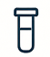

¿Cómo funciona la prueba?
Solicita el kit de toma de muestra en tu farmacia más cercana.

Realiza la recolección de la muestra.

Envíanos la muestra con nuestro servicio de mensajería.
Recibe tus resultados en menos de 48 horas.
Rápido, preciso y confidencial. Resultados disponibles de 24 a 48 horas.
Solicitar pruebaConfianza, precisión y tecnología de vanguardia.
BIOGENIX, es un laboratorio clínico especializado en el diagnóstico molecular de infecciones sexuales. Garantizamos alta sensibilidad, especificidad y fiabilidad en los resultados del análisis qPCR para el agente causal de la gonorrea, Neisseria gonorrhoeae.
Solicita el kit de toma de muestra en tu farmacia más cercana.
Realiza la recolección de la muestra.
Envíanos la muestra con nuestro servicio de mensajería.
Recibe tus resultados en menos de 48 horas.